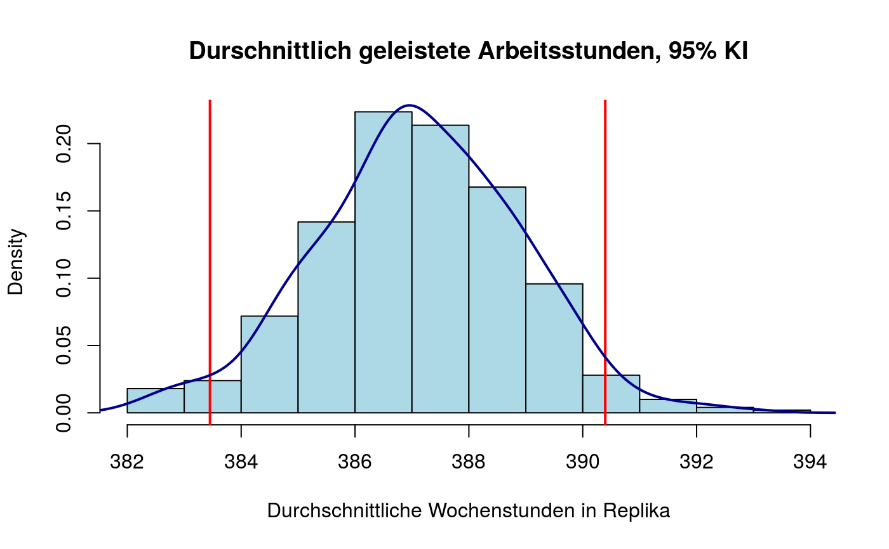
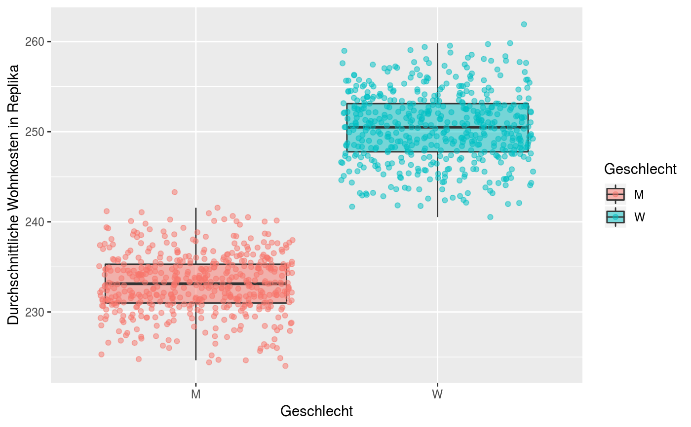
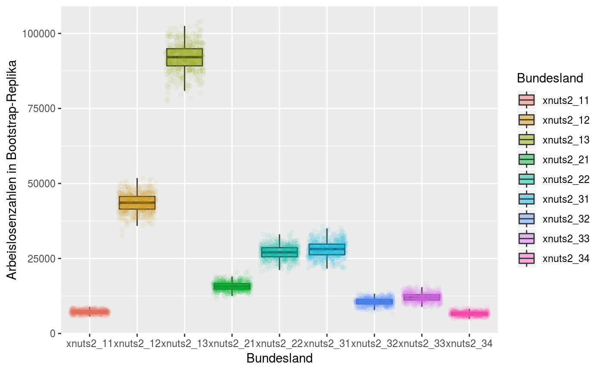

Falls ein mzR Objekt mit dem Parameter replicate = TRUE erzeugt wurde, lassen sich mit dieser
Funktion alle Schätzwerte zurückgeben.
getReplicates(x)
| x | Ein Objekt der Klasse |
|---|
Tabelle mit Bootstrapreplika. Die Spalten entsprechen den Gruppierungsvariablen der
Auswertung, falls vorhanden (siehe das Argument each in GroupRate, Median, etc.). Die Zeilen
enstsprechen den Bootstrapgewichten (typischerweise 500 Stück).
#> #>#> #> #>#> #> #>#> #> #>library(ggplot2) ######################## Beispiel 1: Durschnittliche Arbeitsstunden ############################# dat <- ImportData(year = 2014, quarter = 4)#> #> #>#>#>#> “/home/decill/mnt/mz_intern/2014/2014q4/dg7.mz2014q4.sav” wurde eingelesen.#>#> '/home/decill/mnt/mz_intern/2014/2014q4/mz2_2014q4_bootweights.csv.gz' wurde eingelesen.mzObj <- Mean(dat, TFstring = "xerwstat==1&balt >= 15&balt <= 74", var = "estund*13+dtstd*13", replicates = TRUE) replicates <- getReplicates(mzObj)$replicates hist(replicates, main = "Durschnittlich geleistete Arbeitsstunden, 95% KI", freq = FALSE, col = "lightblue", xlab = "Durchschnittliche Wochenstunden in Replika")########################### Beispiel 2: Wohnkosten nach Geschlecht ############################## mzObj2 <- Mean(dat, TFstring = "xerwstat==1&balt >= 15&balt <= 74", var = "wkges", replicates = TRUE, each = "bsex") getReplicates(mzObj2) %>% tidyr::gather(Geschlecht, wk) %>% mutate(Geschlecht = recode(Geschlecht, bsex_1 = "M", bsex_2 = "W")) %>% ggplot(aes(Geschlecht, wk, fill = Geschlecht)) + geom_boxplot(outlier.shape = NA, alpha = 0.5) + geom_jitter(aes(col = Geschlecht), alpha = 0.5) + ylab("Durchschnittliche Wohnkosten in Replika")###################### Beispiel 3: Arbeitslosenquote nach Bundesland ############################ mzObj3 <- GroupSize(dat,TFstring="xerwstat==2&balt>=15&balt<=74", replicates = TRUE, each = "xnuts2") getReplicates(mzObj3) %>% tidyr::gather(Bundesland, unemployment) %>% ggplot(aes(Bundesland, unemployment, fill = Bundesland)) + geom_boxplot(outlier.shape = NA, alpha = 0.5) + geom_jitter(aes(col = Bundesland), alpha = 0.05) + ylab("Arbeislosenzahlen in Bootstrap-Replika")